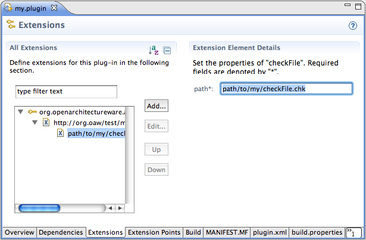

The EMF Validation Adapter integrates the Check language of oAW with the validation framework of EMF and thereby with any validation aware model editor. This includes editors generated by EMF and GMF diagram editors. It obsoletes the old GMF2 adapter.
Validation errors and warnings are usually converted into markers by the model editors. These markers appear in the Problems view.
The oAW EMF Validation Adapter is available from the oAW update site.
We assume you have working Ecore model and a Check file in a plug-in in your workspace. The validation adapter is contributed by means of an eclipse extension.
Open the MANIFEST.MF editor of your plug-in containing the Check
file and add a dependency to the plug-in
org.openarchitectureware.adapter.emf.check in the
dependency tab.
Go to the Extensions tab of your plug-in in the MANIFEST.MF
editor, click Add... and choose the extension
point
org.openarchitectureware.adapter.emf.check.checks.
Enter the nsURI of your metamodel. If yu don't remember the nsURI, it
is one property of the EPackage of your Ecore model.
For each Check file, right click on the metamodel entry, select New->checkFile and enter the path to the file. The file extension .chk can be ommitted.
|  |
No further steps should be necessary. The validation action in the menu bar is only enabled if you select an element in the editor.
In addition to the steps described above, you have to enable
validation explicitely. Open the GMF diagram editor's
.gmfgen file and set the following properties on the
your GenDiagram element:
Set Validation Decorators in the section "Diagram" to true
Set Validation Enabled in the section "Diagram" to true